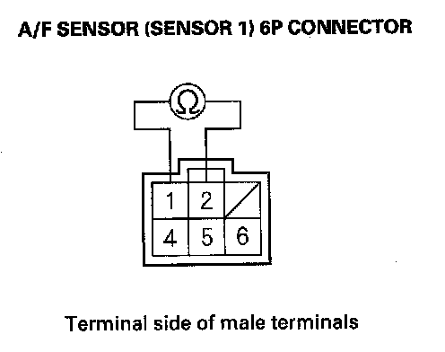

DTC Troubleshooting
DTC P0135: Rear A/F Sensor (Bank 1, Sensor 1) Heater Circuit MalfunctionDTC P0155: Front A/F Sensor (Bank 2, Sensor 1) Heater Circuit Malfunction
NOTE:
- Before you troubleshoot, record all freeze data and any on-board snapshot, and review the general troubleshooting information.
- Information marked with an asterisk (*) applies to the front bank (Bank 2).
1. Turn the ignition switch ON (II).
2. Clear the DTC with the HDS.
3. Start the engine.
4. Check for Temporary DTCs or DTCs with the HDS.
Is DTC P0135 and/or P0155* indicated?
YES - Go to step 5.
NO - Intermittent failure, the system is OK at this time. Check for poor connections or loose terminals at the A/F sensor (Sensor 1), the under-hood fuse/relay box (PGM-FI subrelay), and the PCM.
5. Turn the ignition switch OFF.
6. Check these fuses:
- No. 11 A/F sensor (AFHT+) (15 A) fuse in the under-hood fuse/relay box
- No. 3 R/B 1 (30 A) fuse in the main under-hood fuse box.
- No. 7 +B FAN TIMER (7.5 A) fuse in the under-hood fuse/relay box
Are any of the above fuses blown?
YES - Repair short in the wire between the A/F sensors, the under-hood fuse/relay box (PGM-FI subrelay), then replace the blown fuse(s), and go to step 23.
NO - Go to step 7.
7. Disconnect the A/F sensor (Sensor 1) 6P connector.

8. At the sensor side, measure resistance between A/F sensor (Sensor 1) 6P connector terminals No. 1 and No. 2.
Is there 2.5 - 3.2 ohms at room temperature?
YES - Go to step 9.
NO - Go to step 21.
9. At the sensor side, check for continuity between each terminal at the A/F sensor (Sensor 1) 6P connector and body ground.
Is there continuity?
YES - Go to step 21.
NO - Go to step 10.
10. At the sensor side, check for continuity between A/F sensor (Sensor 1) 6P connector terminals No. 1 and No. 4, No. 1 and No. 5, No. 1 and No. 6 individually.
Is there continuity?
YES - Go to step 21.
NO - Go to step 11.
11. Jump the SCS line with the HDS.
12. Disconnect PCM connector C (49P).
13. Check for continuity between PCM connector terminal C6 (C8)* and body ground.
Is there continuity?
YES - Repair short in the wire between the PCM (C6 (C8)*) and the A/F sensor (Sensor 1), then go to step 22.
NO - Go to step 14.
14. Check for continuity between A/F sensor (Sensor 1) 6P connector terminal No. 2 and PCM connector terminal C6(C8)*.
Is there continuity?
YES - Go to step 15.
NO - Repair open in the wire between the PCM (C6 (C8) *) and the A/F sensor (Sensor 1), then go to step 22.
15. Disconnect the under-hood fuse/relay box 9P connector.
16. Check for continuity between A/F sensor (Sensor 1) 6P connector terminal No. 1 and under-hood fuse/relay box 9P connector No. 9.
Is there continuity?
YES - Go to step 17.
NO - Repair open in the wire between the A/F sensor (Sensor 1) and the under-hood fuse/relay box, then go to step 22.
17. Disconnect PCM connector A (49P).
18. Disconnect the under-hood fuse/relay box 14P connector.
19. Check for continuity between under-hood fuse/relay box 14P connector terminal No. 13 and PCM connector terminal A40.
Is there continuity?
YES - Go to step 20.
NO - Repair open in the wire between the PCM (A40) and the under-hood fuse/relay box, then go to step 22.
20. Test the PGM-FI subrelay in the under-hood fuse/relay box.
Is the PGM-FI subrelay OK?
YES - Go to step 28.
NO - Replace the relay control module (under-hood fuse/relay box), then go to step 22.
21. Replace the A/F sensor (Sensor 1).
22. Reconnect all connectors.
23. Turn the ignition switch ON (II).
24. Reset the PCM with the HDS.
25. Do the PCM idle learn procedure.
26. Check for Temporary DTCs or DTCs with the HDS.
Is DTC P0135 and/or P0155* indicated?
YES - Check for poor connections or loose terminals at the A/F sensor (Sensor 1), the under-hood fuse/relay box (PGM-FI subrelay) and the PCM, then go to step 1.
NO - Go to step 27.
27. Monitor the OBD STATUS for DTC P0135 and/or P0155* in the DTCs MENU with the HDS.
Does the screen indicate PASSED?
YES - Troubleshooting is complete. If any other Temporary DTCs or DTCs were indicated in step 26, go to the indicated DTCs troubleshooting.
NO - If the screen indicates FAILED, check for poor connections or loose terminals at the A/F sensor (Sensor 1), the under-hood fuse/relay box (PGM-FI subrelay) and the PCM, then go to step 1. If the screen indicates NOT COMPLETED, keep idling until a result comes on.
28. Reconnect all connectors.
29. Update the PCM if it does not have the latest software, or substitute a known-good PCM.
30. Check for Temporary DTCs or DTCs with the HDS.
Is DTC P0135 and/or P0155* indicated?
YES - Check for poor connections or loose terminals at the A/F sensor (Sensor 1), the under-hood fuse/relay box (PGM-FI subrelay) and the PCM. If the PCM was updated, substitute a known-good PCM, then recheck. If the PCM was substituted, go to step 1.
NO - Go to step 31.
31. Monitor the OBD STATUS for DTC P0135 and/or P0155* in the DTCs MENU with the HDS.
Does the screen indicate PASSED?
YES - If the PCM was updated, troubleshooting is complete. If the PCM was substituted, replace the original PCM. If any other Temporary DTCs or DTCs were indicated in step 30, go to the indicated DTCs troubleshooting.
NO - If the screen indicates FAILED, check for poor connections or loose terminals at the A/F sensor (Sensor 1), the under-hood fuse/relay box (PGM-FI subrelay) and the PCM. If the PCM was updated, substitute a known-good PCM, then recheck. If the PCM was substituted, go to step 1. If the screen indicates NOT COMPLETED, keep idling until a result comes on.